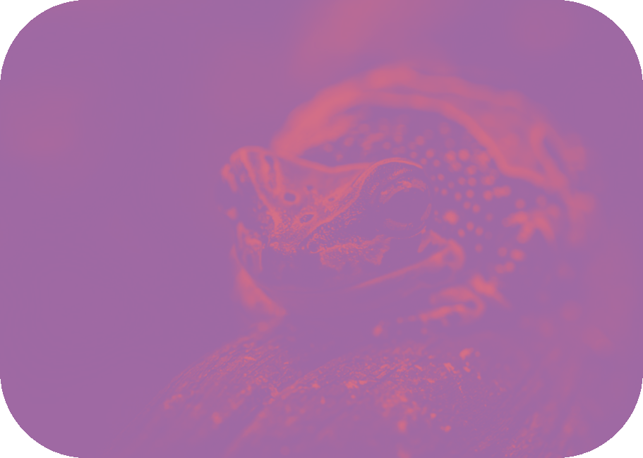
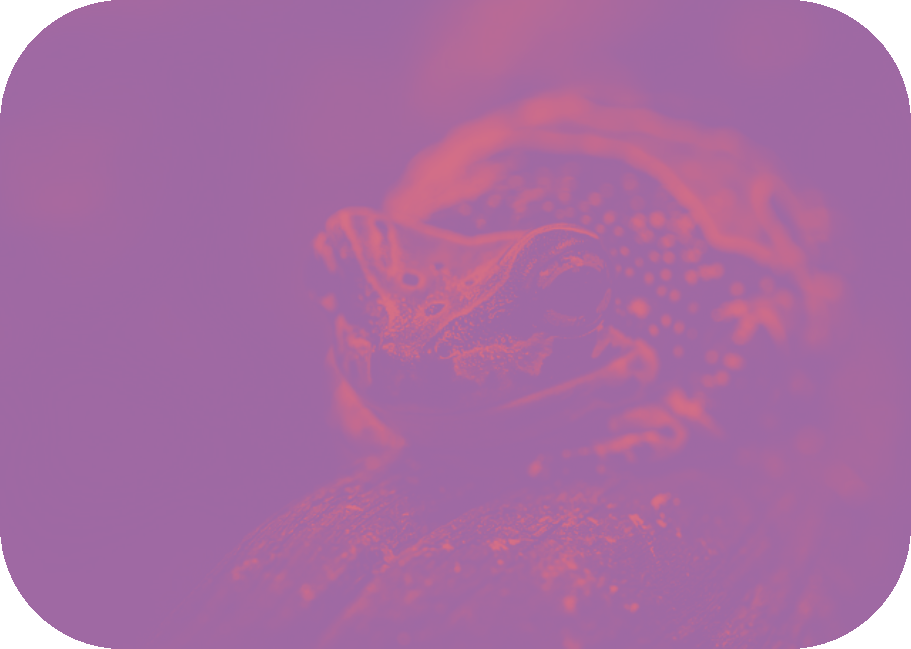

TØRRE FRØER
 

De tørreste fyre i hele dyreverdenen. Det knaser når de bevæger sig, hvilket intimiderer ethvert rovdyr.
De holder sig fra ALT vådt, og dør simpelthen hvis de kommer under vand.
Hvis du nogensinde ser en tør frø med noget vand på sig, skynd dig at finde hårtørreren frem og blæs på drengen.